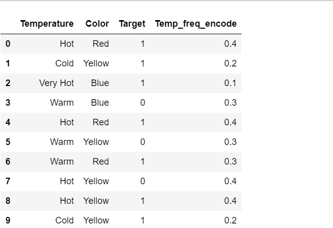
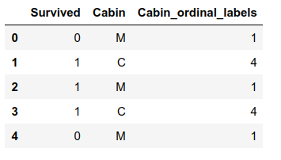
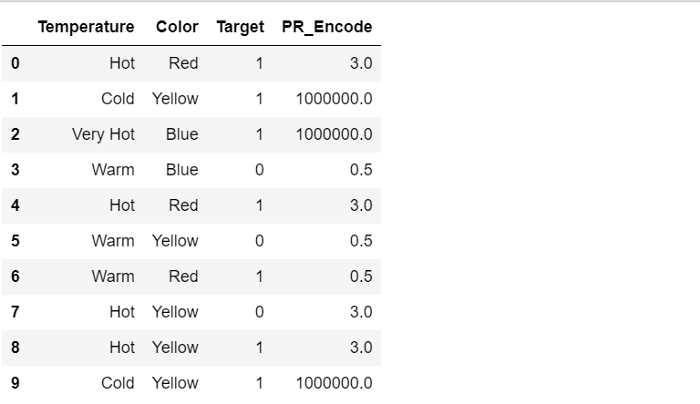

Median Imputation
Columns in the dataset which are having numeric continuous values can be replaced with the mean, median, or mode of remaining values in the column. This method can prevent the loss of data compared to the earlier method. Replacing the above two approximations (mean, median) is a statistical approach to handle the missing values.
Mean Imputation
Columns in the dataset which are having numeric continuous values can be replaced with the mean, median, or mode of remaining values in the column. This method can prevent the loss of data compared to the earlier method. Replacing the above two approximations (mean, median) is a statistical approach to handle the missing values.
Mode Imputation
Columns in the dataset which are having numeric continuous values can be replaced with the mean, median, or mode of remaining values in the column. This method can prevent the loss of data compared to the earlier method. Replacing the above two approximations (mean, median) is a statistical approach to handle the missing values.
Random Sample Imputation
Random sampling imputation consists of extracting random observations from the pool of available values in the variable. Random sampling imputation preserves the original distribution, which differs from the other imputation techniques.
End Of Distribution Imputation
If there is suspicion that the missing value is not at random then capturing that information is important. In this scenario, one would want to replace missing data with values that are at the tails of the distribution of the variable.
Arbitrary Value Imputation
Arbitrary value imputation consists of replacing all occurrences of missing values within a variable by an arbitrary value. Ideally arbitrary value should be different from the median/mean/mode, and not within the normal values of the variable
Capture NAN Imputation
Capuring nan imputation sugegst that this feature engineering technique is basicly used on the data which is not missing completely at random.This technique is used for capturing importance of missing values.But due to adding additinal features it may lead to Curse of dimensionality.
Frequent Value Imputation
Frequent value imputation is used for handling catagarical missing values. In this technique we sort the values in the dataset according to their ascending order.The first value in that order become the most frequent value and we repalce other missing values with that perticular most frequent value
Adding Extra Variable Imputation
Adding extra variable this method is used when we have large amount of missing values.In this feature engineering technique first we replace all missing valeus with 1 and others reamin as it is.Then by finding out the the most frequent value we fill the missing value with that most frequent value
Fill With Missing Imputation
This is the simplest feature engineering technique that is used when we a lot of missing values.In this technique we replace missing value with Missingwordby keeping remaining values as it is.
flooring_capping Technique
In this technique, we will do the flooring (e.g., the 10th percentile) for the lower values and capping (e.g., the 90th percentile) for the higher values. These values will be used for quantile-based flooring and capping..
Trimming Technique
In this method, we completely remove data points that are outliers. It creates an index for all the data points where any feature takes these two values. Then we drop these index rows from the data, and finally we summararize statistics for the variable.
minimum and maximum values are much more acceptable..
InterQuartile Range Technique.
This technique uses the IQR Technique scores calculated to remove outliers. The rule of thumb is that anything not in the range of (Q1 - 1.5 IQR Technique) and (Q3 + 1.5 IQR Technique) is an outlier, and can be removed. It removes outliers based on the IQR Technique range . This shows that for our data, a lot of records get deleted if we use the IQR Technique method.
logarithem.
Transformation of the skewed variables may also help correct the distribution of the variables. These could be logarithmic, square root, or square transformations. The most common is the logarithmic transformation.
median Technique.
In this technique, we replace the extreme values with median values. It is advised to not use mean values as they are affected by outliers. It cretes the 50th percentile value, or the median, which comes out to be 140. Then we create 95th percentile value, Then line of code below replaces all those values which are greater than the 95th percentile, with the median value. Finally, Finally summary statistics after all these techniques have been employed for outlier treatment.
Frequency Encoding
It is a way to utilize the frequency of the categories as labels. In the cases where the frequency is related somewhat with the target variable, it helps the model to understand and assign the weight in direct and inverse proportion, depending on the nature of the data.

Target Guided Encoding
features are replaced with a blend of posterior probability of the target given particular categorical value and the prior probability of the target over all the training data.

Mean Encoding
Mean Encoding or Target Encoding is one viral encoding approach followed by Kagglers. There are many variations of this. Here I will cover the basic version and smoothing version. Mean encoding is similar to label encoding, except here labels are correlated directly with the target. For example, in mean target encoding for each category in the feature label is decided with the mean value of the target variable on a training data. This encoding method brings out the relation between similar categories, but the connections are bounded within the categories and target itself. The advantages of the mean target encoding are that it does not affect the volume of the data and helps in faster learning. Usually, Mean encoding is notorious for over-fitting; thus, a regularization with cross-validation or some other approach is a must on most occasions.

Probability Ratio Encoding
Probability Ratio Encoding is similar to Weight Of Evidence(WoE), with the only difference is the only ratio of good and bad probability is used. For each label, we calculate the mean of target=1, that is the probability of being 1 ( P(1) ), and also the probability of the target=0 ( P(0) ). And then, we calculate the ratio P(1)/P(0) and replace the labels by that ratio. We need to add a minimal value with P(0) to avoid any divide by zero scenarios where for any particular category, there is no target=0.

One Hot Encoding
In this method, we map each category to a vector that contains 1 and 0 denoting the presence or absence of the feature. The number of vectors depends on the number of categories for features. This method produces a lot of columns that slows down the learning significantly if the number of the category is very high for the feature.

One Hot Encoding With Multi Categories
In the winning solution of the KDD 2009 cup: "Winning the KDD Cup Orange Challenge with Ensemble Selection" http://www.mtome.com/Publications/CiML/CiML-v3-book.pdf, the authors limit one hot encoding to the 10 most frequent labels of the variable. This means that they would make one binary variable for each of the 10 most frequent labels only. This is equivalent to grouping all the other labels under a new category, that in this case will be dropped. Thus, the 10 new dummy variables indicate if one of the 10 most frequent labels is present (1) or not (0) for a particular observation.
SelectBest
It takes as a parameter a score function, which must be applicable to a pair (X, y). ... So, for example, if you pass chi2 as a score function, SelectBest will compute the chi2 statistic between each feature of X and y (assumed to be class labels). A small value will mean the feature is independent of y.
RemoveCollinearity
In statistics, multicollinearity (also collinearity) is a phenomenon in which one feature variable in a regression model is highly linearly correlated with another feature variable. A collinearity is a special case when two or more variables are exactly correlated.
Gaussian Transformation
Normal distribution, also known as the Gaussian distribution, is a probability distribution that is symmetric about the mean, showing that data near the mean are more frequent in occurrence than data far from the mean. In graph form, normal distribution will appear as a bell curve.
MinMaxScaler
Transform features by scaling each feature to a given range. This estimator scales and translates each feature individually such that it is in the given range on the training set, e.g. between zero and one.
StandardScaler
StandardScaler. StandardScaler standardizes a feature by subtracting the mean and then scaling to unit variance. Unit variance means dividing all the values by the standard deviation. StandardScaler makes the mean of the distribution 0. About 68% of the values will lie be between -1 and 1.